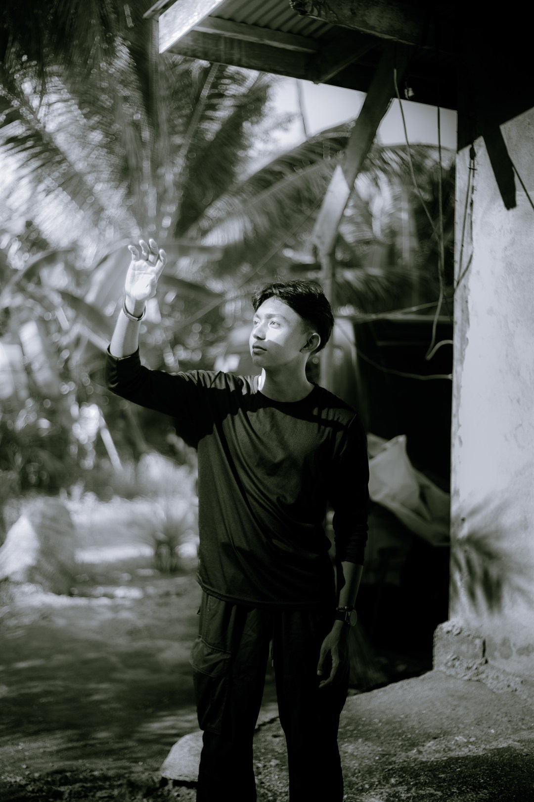
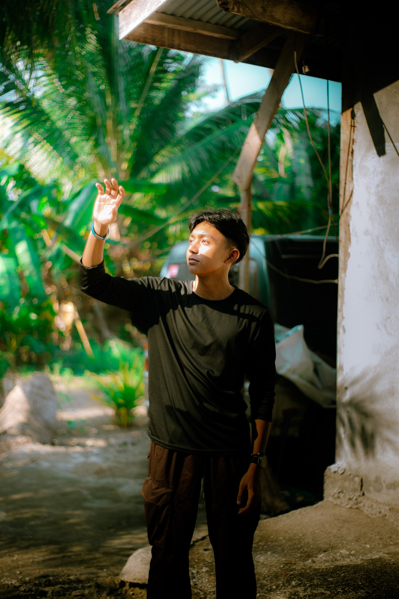

I build software and
embedded systems for
real-world problems.
OTHER WORK
ChemLab Apparatus System ↗
Laboratory apparatus queue & QR verification
PHP · MySQL · QR Auth
2026
Automated Medicine Dispenser
Healthcare smart assistant & actuator hardware
Arduino C++ · Java Swing
2026
eBarangay Citizen Portal ↗
Digital document requests & civic governance
JavaScript · REST API
2026
PMAEE CadetCoach ↗
Cloud-hosted military entrance exam preparation
Node.js · Render Cloud
2026
Content Creation Manager ↗
Standalone asset organizer & preset parser
Java Swing · File I/O
2025
F.R.I.D.A.Y Assistant ↗
Experimental voice NLP & computer vision
Python · SpeechRecognition
2025


02 / ABOUT LEX
Engineering with human clarity.
Computer Engineering student at Cor Jesu College, Digos City. I focus on backend architecture, hardware-software interfacing, and web platforms that solve concrete administrative bottlenecks.
Photography, film, and documentary frames.
01 / BEHIND THE LENS
Stories in stillness and motion...
Documentary and portrait photographer through Leavian Visuals. Rooted in honest lighting, candid photojournalism, and unforced human connections across Davao and Mindanao.
VISUAL ARCHIVE
HOW I WORK
ENGINEERING
Build carefully.
Keep things useful.
Make it last.
PHOTOGRAPHY
Observe first.
Shoot second.
Edit with restraint.